Invariants
In this tutorial, we’ll learn how to make an abstract model of a simple protocol and prove a property of it using an inductive invariant. This is usually the first step in designing and implementing a protocol in Ivy.
An invariant of a system is a formula about the system’s state that is always true. Invariants are the simplest class of properties that we specify about systems. An inductive invariant is a formula or a set of formulas that has the following key properties:
-
initiation: It is true in all initial states of the program.
-
consecution: If it is true in a state, then after executing any exported action, the formula remains true.
Every inductive invariant is an invariant, but not every invariant is inductive. An inductive invariant is relatively easy to prove, since we only have to verify the initiation and consecution properties, a task which Ivy can usually perform automatically. Often, though, the invariant properties we really want to prove are not inductive and we therefore require some cleverness to strengthen the desired invariant to make it inductive.
As we will see, Ivy makes this step easier by providing tools to visualize the failures of inductive proofs and suggest possible refinements to the proof.
An abstract protocol model
The following Ivy program is a very abstract model of a semaphore protocol. We have a collection of clients and a collection of servers. Each server has a semaphore which can be held by at most one client at a time.
#lang ivy1.7
type client
type server
relation link(X:client, Y:server)
relation semaphore(X:server)
after init {
semaphore(W) := true;
link(X,Y) := false
}
action connect(x:client,y:server) = {
require semaphore(y);
link(x,y) := true;
semaphore(y) := false
}
action disconnect(x:client,y:server) = {
require link(x,y);
link(x,y) := false;
semaphore(y) := true
}
export connect
export disconnect
This program declares two types client and server. At this
point, we don’t know anything about these types except that there is
at least one value of each type. The types client and server can
be though of as representing abstract identifiers of clients and servers,
respectively (when we implement this protocol, we might replace these
abstract identifiers by network addresses).
The state of the protocol model consists of two relations. The
relation link tells us which clients are are holding the semaphores
of which servers, while semaphore tells us which servers have their
semaphore “up” (that is, available to be taken).
The program contains a block code after the keywords after
init. This code is executed just once when the protocol starts. It
initializes the state so that all the semaphore are “up” (that is, for
every server W. semaphore(W) is set to true) and there are no
links (that is, for every client X and server Y, link(X,Y) is
set to false). These statements are simultaneous assignments that
update the given relations for many values of their parameters at
once.
You can recognize a simultaneous assignment by the fact that the
parameters of the relations are placeholders (or wildcards)
represented by capital letters.
The program exports two actions to the environment: connect and
disconnect. The connect actions creates a link from client x to
server y, putting the server’s semaphore down. Each action has a
precondition, indicated by the require keyword. To call an action,
the environment is required to satisfy its precondition. Notice that
connect requires that the server’s semaphore be initially up. The
disconnect action removes a link and puts the semaphore up. It
requires that the link be initially established. The two export
declarations at the end tell us that the environment may call
connect and disconnect in arbitrary sequence, though it must obey
the stated requirements.
It is important to keep in mind that this Ivy program is an abstract
model of a protocol, and not the protocol’s actual implementation. The
abstract actions just describe the possible high-level state transitions that
the protocol can make. It doesn’t tell us how these transitions
actually come about. In an implementation, the abstract connect action might
be achieved by the client sending a request message to the server and the
server issuing a reply.
Safety and invariant conjectures
Now we will give our abstract model a property that it must satisfy. The simplest kind of property we can specify is an invariant. This is a formula that must hold true between calls by the environment to the program’s actions (though it might be untrue temporarily while the actions are executing). In the client/server example above, we might specify that no two distinct clients can be linked to a single server at the same time. We can express this property using the following invariant assertion:
invariant ~(X ~= Z & link(X,Y) & link(Z,Y))
Once again the capital letters act as wildcards. The invariant
assertion implicitly holds true for all clients X and Z and all
servers Y. Another way to say this is that the placeholders X, Y
and Z are implicitly universally quantified.
Proving the invariant
As mentioned above, to prove an invariant, we check that it is initially true, and that every action of the program preserves it. Ivy can do this automatically. To make the check, we use this command:
$ ivy_check client_server_example.ivy
[Note: the source files for the examples in this tutorial can be found in the
subdirectory doc/examples of the Ivy source tree]. Ivy attempts the check and produces
this somewhat discouraging output (with uninteresting parts omitted):
...
Initialization must establish the invariant
client_server_example.ivy: line 30: invar2 ... PASS
...
The following set of external actions must preserve the invariant:
ext:connect
client_server_example.ivy: line 30: invar2 ... FAIL
ext:disconnect
client_server_example.ivy: line 30: invar2 ... PASS
...
error: failed checks: 1
This means that our proposed invariant may be true, but it isn’t
inductive. In particular the connect action doesn’t preserve the
invariant. We should take heart, however, because Ivy can give us
some feedback that explains what went wrong in the form of a
counterexample. A counterexample in this case is an execution of
the connect action that starts in a state in which the invariant is
true and ends in a state in which it is false.
We can get a graphical view of the counterexample by running the check again with the
option diagnose=true, like this:
$ ivy_check diagnose=true client_server_example.ivy
Ivy pops up a window that looks like this:
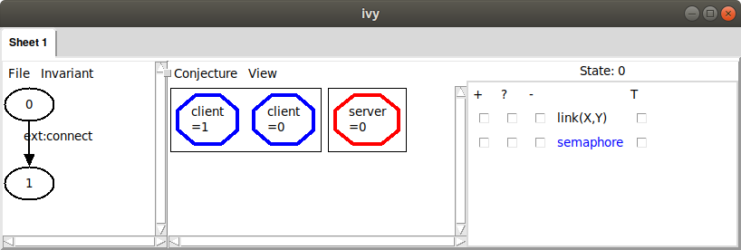
In the left pane of this window is a diagram in which each oval
represents a state of the protocol and each arrow represents the
execution of an action. There are two states, labeled 0 and 1. From
state 0 to state 1 there is an arrow labeled with the action
connect. We know something has gone wrong in the execution of connect.
In the middle pane, we see a graphical representation of
state 0. Currently, all we see is that there are two clients (in other
words, two values of type client) and there is one server. To learn
more about the state, we can use the checkboxes on the right to enable
the display of relations in this state. For example, if we check the
box in the + column next to the relation link(X,Y), we’ll see an
arrow from client X to server Y when the relation link(X,Y) is
true. In this case, we see:
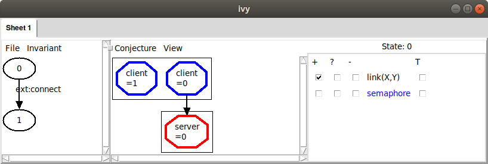
Here, we see that just one client is connected to the server, which means our
invariant property is true. When we check that an invariant is inductive, the counterexample
always starts in a state in which the invariant holds. If we check the box in the + column next to semaphore(X), we can begin to see a problem:
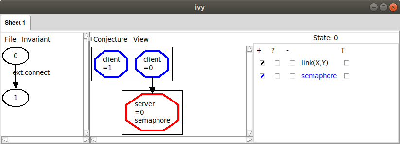
Ivy is telling us that the value of semaphore at our server is
true. We had in mind, however, that the semaphore should be “down”
(i.e., false) whenever a client is connected to the server. We
therefore suspect that this state of the system is not possible (that
is, it is not reachable from the initial state). This usually means
that we need to add another formula to our invariant to rule out
something bad about this state.
To see the consequence of the semaphore being up, we can move to state 1 by clicking on it. Here’s what we see:
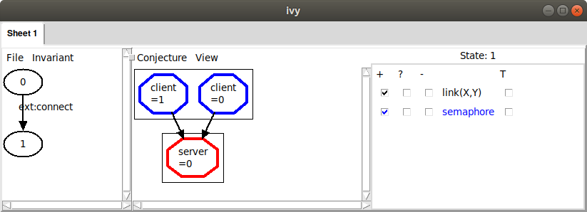
Now both clients are linked to the same server, violating our
invariant property. A counterexample to induction always ends in this
way. To see more detail about how we got there, we can left-click on
the action connect and choose Step in. This will show us the
detailed sequence of actions that got to the bad state:
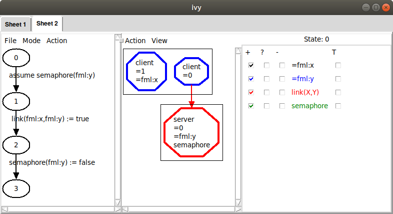
Here, we are viewing state 0 (the state that occurs just at entry to
the connect action). We have checked a few boxes to display
information about this state. We can see here the values of the formal
parameters x and y that were provided by the environment when
calling connect. In particular, the environment chose the value 1
for x, meaning that client 1 should be connected to server 0 (the
only server in this case). The counterexample steps through three additional
states, first testing the precondition of connect (which is true, since the semaphore is up),
then establishing a link from x to y, then putting the semaphore down.
If we left-click on any statement choose Show source, the
corresponding source line is displayed. As we step into action calls,
we build up a sequence of tabs, corresponding to something like a
stack trace of the program’s execution. Tabs can be removed by
choosing Remove tab from the File menu.
At this point we understand the reason that the invariant is not inductive.
The failure was caused by the fact that a client X was connected to a server Y
and the semaphore at this server was up. This bad pattern caused the failure,
and we conjecture that it can never actually occur. For this reason, we will strengthen
our invariant with a condition that rules out the bad pattern. It is very important to
understand that we do not want to rule out everything about the counterexample that is unrealistic – only those aspects that actually cause the failure.
To rule out the bad pattern, we add this new conjectured invariant to our Ivy program:
private {
invariant ~(link(X,Y) & semaphore(Y))
}
This says that there is no client X and server Y such that X
is linked to Y and the semaphore at Y is up. Notice again that the
capital letters X and Y are universally quantified placeholders.
We put the new invariant property in a private section just to
indicate that this invariant is not of interest to users of the
protocol model. It is only introduced as part of the proof of the
original invariant. Now when we check the program, we get this:
...
Initialization must establish the invariant
client_server_example.ivy: line 26: invar2 ... PASS
client_server_example.ivy: line 34: invar3 ... PASS
Any assertions in initializers must be checked ... PASS
The following set of external actions must preserve the invariant:
ext:connect
client_server_example.ivy: line 26: invar2 ... PASS
client_server_example.ivy: line 34: invar3 ... PASS
ext:disconnect
client_server_example.ivy: line 26: invar2 ... PASS
client_server_example.ivy: line 34: invar3 ... PASS
...
OK
The OK at the end tells us that our invariants taken together are now inductive. This means we can be confident that the invariants always hold.
Another way to create a conjectured invariant from a bad pattern is to
have Ivy gather the displayed facts and generalize them. Once we
have the bad pattern displayed, as above, we use the ‘Gather’ command
in the Conjecture menu. This gives us the following:
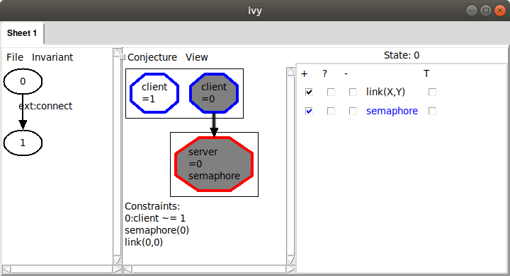
Ivy has collected three facts about the displayed state, shown under the heading ‘Constraints’. These facts are a logical representation of the bad pattern we observed graphically: there are two distinct nodes, one of which is connected to the server and the server’s semaphore is up.
Also notice that some nodes and the arcs in the graph have been highlighted to indicate that they are used in the listed facts. We can click on facts in this list to toggle them off and on. This allows us to adjust the bad pattern.
Since we think that the displayed facts form a bad pattern, we can generalize them
to produce a new conjectured invariant about the program
state. Choosing the Strengthen option from the Conjecture menu, we
see:

Ivy is suggesting to add this fact to the list of conjectured invariants:
~(C:client ~= D & link(C,S) & semaphore(S))
Ivy has simply replaced the fixed client and sever identifiers in the
gathered facts with universally quantified placeholders C, D and
S. This formula says that we cannot have two distinct clients,
where one of them is linked to the server and the semaphore is up. We
click OK, adding this formula to our list of conjectured invariants.
We can now try checking inductiveness again with our new conjecture.
We do this with the Check induction command in the Invariant menu.
We see the following:
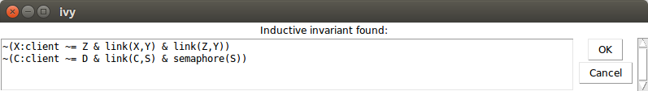
If the induction check had failed, we would see a new counterexample
to induction that we would have to rule out. However, since it was
successful, we now have a proof that our desired invariant holds. Of
course, we want to save our new inductive invariant so that we can use it again
later. We select Save invariant from the File menu and enter a
file name:
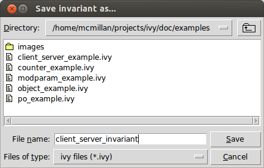
Here is the content of the file:
# new conjectures
invariant ~(C:client ~= D & link(C,S) & semaphore(S))
This new invariant can be pasted into our program. Notice it is
slightly different from the invariant we selected previously. That
is, the bad pattern includes a second client D that is needed to
violate the desired property of mutual exclusion. It turns out this
doesn’t matter. This weaker invariant is still strong enough to prove
the property.
Let’s consider the process we just used to arrive at an inductive invariant. We took the following steps:
-
Find a simple counterexample to induction
-
Identify relevant facts about the counter-example (the bad pattern)
-
Generalize to form a universally quantified invariant conjecture
The first and last steps were done automatically by Ivy. However, we performed the second step manually, by select which relations to display.
This process is something of an art and can be confusing. For example, it sometimes happens that a condition we thought was a bad pattern is actually reachable. In this case, we have to backtrack and perhaps rule out a more specific pattern. Fortunately, Ivy provides some tools to help us make these choices.
Generalization tools
Ivy has some techniques built in to help us identify bad patterns. Let’s to back to the counterexample we found to inductiveness of our proposed invariant:
We can ask Ivy to try to generalize from the counterexample, by finding
a bad pattern in state 0 that is sufficient to cause our proposed
invariant to fail at state 1. To do this we choose Diagram from the Invariant menu.
This produces the following display:
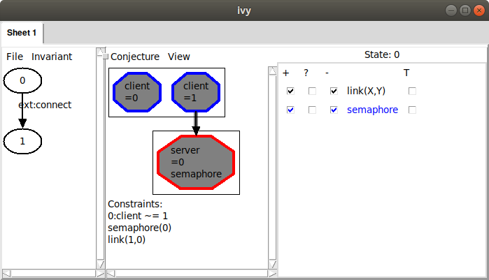
Ivy has drawn a diagram of a possible bad pattern it has identified in the state. The pattern includes the two clients and the server from our counterexample, which are highlighted in the diagram. In addition, it includes the link from client 1 to the server, and the fact that the semaphore is true at the server. These facts are listed below the diagram under the heading ‘Constraints’. Ivy has determined that these conditions are sufficient to cause the invariant to fail.
Since we agree that this is a bad pattern, we can use the Strengthen
option from the Conjecture menu, as above, to produce a conjectured
invariant that rules it out. In this simple case, the strengthening of
the invariant has been done fully automatically.
However, as we noted above, this bad pattern contains in irrelevant
fact, and we might want to drop it to get a stronger conjecture that
rules out more cases. That is, our bad pattern requires that there are
two distinct nodes, 0 and 1. In fact, we do need two nodes to have
a safety violation (that is, to have two nodes connected to one
server). Notice, though, that if we drop this fact from the pattern,
we still have a pattern that we can rule out, that is, semaphore(0)
and link(0,0).
To check this idea, we remove the irrelevant fact from the pattern by clicking on it. The unwanted fact becomes gray:
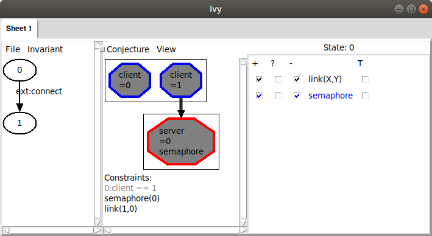
When we strengthen using this pattern, we get this:
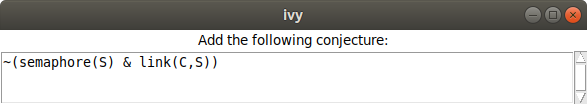
That is, our new conjecture says that no client can be connected to a server with the semaphore up, but it doesn’t depend on the existence of any other client. We can verify that with this conjecture, we still have an inductive invariant.
This illustrates an important point about inductive invariants: there are many of them. This give us the flexibility to find a simple one. By dropping a fact from the bad pattern, we effectively generalized it. That is, we ruled out a larger class of states, so in effect we made a stronger conjecture.
Ivy can often discover automatically that a bad pattern can be
simplified. One way to do this is to use bounded
reachability. After Gather, Instead of manually eliminating the
unwanted facts, we can select Minimize from the Conjecture
menu. Ivy ask for the number of steps to check. Somewhat arbitrarily,
we choose four. This is the result we get:
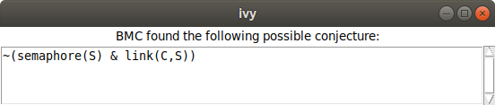
Ivy has recognized that there is a more general pattern that can be ruled out if we consider only four steps of execution of the protocol. Its conjecture is that if any client is connected to a server, that server’s semaphore is down. This fact is definitely true after four steps of execution, but it’s still a conjecture. If we’re suspicious that it might not be invariantly true, we could try five steps, six steps, and so on until we are convinced, or until the Ivy gets too slow.
We can add Ivy’s generalized conjecture to our set using Strengthen,
which completes the proof.
Things that go wrong
At some point, we will make a conjecture that is just plain wrong, in
the sense that it is not always true. Before clicking Strengthen, it’s a good
idea to try Bounded check to see if the proposed bad pattern can actually
occur within some fixed number of steps.
To see how this goes, suppose we get into this situation:
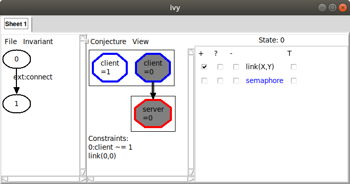
Here, we didn’t consider the semaphore and we conjectured a bad
pattern in which there is a client connected to a server. Obviously
(or hopefully) this is actually reachable. To see why this is a bad conjecture,
we can select Bounded check from the Conjecture menu. Here’s what we see when we choose
one step:
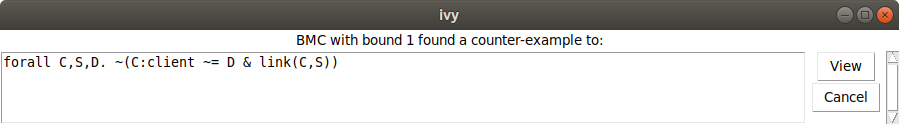
Ivy tried the conjecture that node client is connected to any server
for one step and found it false. If we click View, here is what we see:
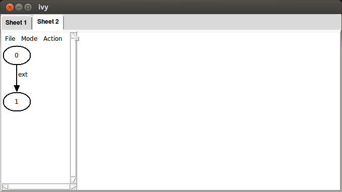
Ivy has created a new tab in the interface with a trace consisting of
two steps. The arrow represents a transition from state 0 to state
1 using the ext action. This represents an action of the environment.
Clicking on state 0, and checking the link and semaphore relations,
we see the following:
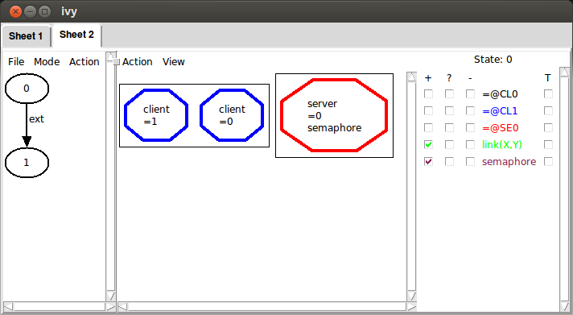
That is, in the initial state there are two clients and one server, the semaphore of the server is up and there are no links.
Now, clicking on state 1, we see our proposed bad pattern. This
means that the pattern can actually occur.
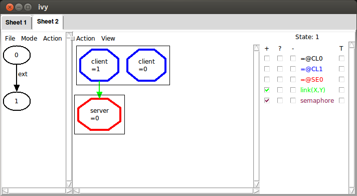
Removing a failed conjecture
Even with bounded checking, it is still possible that we could mistakenly
strengthen the invariant with a conjecture that isn’t true. If this happens,
or if we regret a conjecture for any other reason, we can remove it using
the Weaken operation in the Invariant menu:
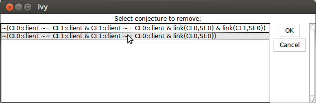
This dialog can be resized to see long formulas.
Summary
We prove invariant properties by induction. If our proposed invariant is not inductive, Ivy generates a counterexample to induction or CTI. Ivy tries to generate the simplest possible counterexample.
A CTI can be eliminated by strengthening the proposed inductive invariant. To do this, we identify a bad pattern in the CTI. This is done in the following steps:
- Use the check boxes to display relevant information
Gatherthe displayed facts- Select relevant facts by clicking to enable or disable them.
Strengthenthe invariant by generalizing the bad pattern.
You can get some help from Ivy in this process:
- Use
Diagramto have Ivy try to guess a bad pattern. - Use
Bounded checkto see if the bad pattern is reachable in a given number of steps. - Use
Minimizeto generalize the pattern by dropping un-needed facts.
To debug a counterexample, left-click on an action call and choose
Step in. The View source operation can be used to find the
action in the source file.
When you are convinced that a bad pattern should be ruled out, use Strengthen to
generalize it to a universal conjecture and add it to the proposed invariant.
To remove a conjecture from the proposed invariant, use Weaken.
When Check induction produces no CTI, the conjectured invariant is
in fact a safety invariant. You can save it for future use with the
Save invariant operation.